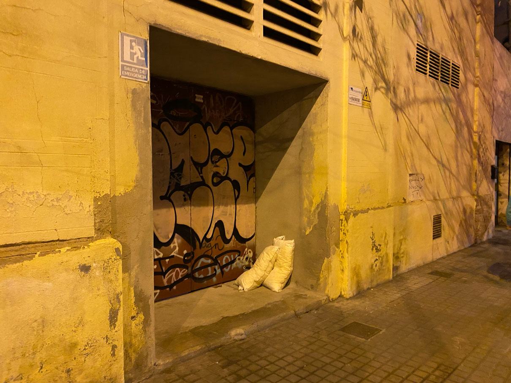
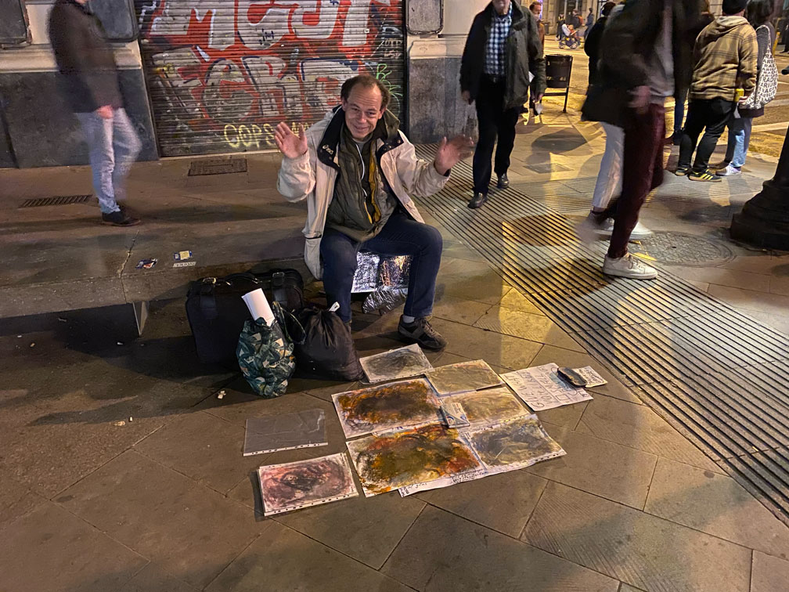

🗓 February 2022
Design Intervention 1: 1st Person Perspective
How can we design with and for the urban communities experiencing homelessness to create opportunities for constructive social engagement?
This intervention explores some broader questions about marginalized communities, and how they are affected by and engage with urban spaces, society, and technology. Focusing on how design and technology can change the ways we perceive and engage with one another. Some of the questions I am asking are: what can we learn from the UH? What are the tools that could help empower the UH and explore their assets and offerings? How can we reflect on and alter our social biases towards one another? More specifically, can we use the anonymity of digital spaces to create more inclusive and safe spaces for people of different social statuses to engage with one another?
Goals:
- Explore inclusive design and designing with marginalized communities
- Gather stories and insight from first hand experiences
- Speculate on what technologies can be used for inclusive engagement and social contribution
Approach:
- Asset framing and empowering individuals
- Solidarity over charity
- Understanding power dynamics and systems
- Understanding my own biases and trying not to project my own feelings onto others’ lives
- In line with my asset framing approach, I am intentionally using the phrase “people experiencing homelessness” opposed to “the homeless”, which identifies a group of people through their deficits
Having grown up and lived in large cities where people experiencing homelessness is a major issue, I’ve long reflected on this complicated topic of equitability, human value, and needs. As I spent more years on this earth, I started to reflect on my own feelings of pity towards a group of people more critically and on the system that supports these circumstances. Wanting to take action on these feelings, I have volunteered with food banks, had conversations and shared meals with individuals, and gained more insight on individual experiences and the system from my partner, who had worked as a social worker for a while.
When we moved to Barcelona, I found a volunteer group called Esperanca, who meets weekly to collect and distribute food and clothing to people experiencing homelessness. I first volunteered with them over the holidays in 2021. I prepared sandwiches and joined them on a walk to distribute them one evening around Raval and Park Cituidella neighborhoods. Through volunteering with Esperanca, I met many people living without homes and made some important reflections that were specific to this urban area and culture.

Here are some of my initial learnings (in relation to design and uran space):
- The 24hr sidewalk lights, designed to make citizens feel safe during the night, are a disturbance for people who find their beds on the streets.
- People who have been without homes and living on food donations for a long time have sensitive stomaches and teeth, and are not able to bite into hard foods like apples and have difficulty digesting highly acidic foods.
- Due to the milder climate and the good social systems, many people from different countries land in Barcelona
- People design their own shelters with found materials, and some are very clever and useful.
In the beginning of February 2022, I met an artist experiencing homelessness named Patrick Highsmith on the street outside of Jaume station [image 28]. I was on my way to dinner and noticed him sitting on the stone bench with some papers spread out on the floor. As we were waiting for the light to change, I looked closely at the papers and noticed he was selling oil pastel drawings insdie clear files. I went to look closer at the pieces and he had a sign that said ‘small paintings, pay what you can.’
I approached him and asked how much the drawings were and what the drawings were about. He said the large ones are 10 and small ones pay what you can. and the drawings he made with oil pastel and acrylic underneath. He was from Germany (German-American) and was in Spain trying to make some art and find a way to get by. He tried living in some area in the city and he was getting raped so he left and is going to see the social workers on Monday. He told me this when I asked him if he was okay and had somewhere to stay and eat. He also told me he liked working with drawings and computers. I bought a small painting from him with all the lights change I had left in my wallet which was 2euro 50cent. I received his e-mail and said we would be in touch.

I had no idea what my next steps were for this “intervention”, but I knew I was still working with a lot of presumptions about a topic and system I didn’t know so well and wanted to understand more. With this intent, and an effort to somehow frame these efforts into a “design intervention”, I reached out to Marco, an organizer who had been working with the r from Esperanca for four years and is acquainted with many of the homeless people in the city. He offered to help in the process of approaching, interviewing, and translating my questions to the homeless people. So I’ve gathered a document that contains my intent and some interview questions on personal identites, daily experience of urban spaces, human relations, and assets in a google document [image 29]. You can view the entire document here: http://bitly.ws/quUT
I met with Marco after class one day at his bike shop, which happened to be a block away from IAAC, and discussed my intent and questions I’ve prepared. From the conversation, I’ve gained a lot of new insight and information on the lives of people experiencing homelessness which I will list below. As we concluded our conversation, Marco expressed he would be willing to help but has limited schedule due to his new job and gave me the contact of another organizer for Esperanca. Since then, I’ve tried getting in touch with the other organizer and had no luck. I tried emailing Patrick and received no response. So I will wrap up with these learnings for now.
Key learnings from conversation with Marco:
- Some questions about their personal lives may not go as planned, as some people can get angry and irritated
- Some of the questions may need to be rephrase to and to reflect more practical questions like what do they need? What can be helpful to them?
- Around 99% of people experiencing homelessness (that he knows) are men because women have more support from organizations or from individuals, because women and children or seem to be as more vulnerable.
- He said, “if you were homeless in Barcelona you will not starve to death”, because there are a lot of organizations in kitchens that make food available.
- Approximately 10% of people have phones, some have radios.
- Marco doesn’t know everyone’s names but identifies them by their face and where the location sleep every night
Key issues disucussed with Marco:
- Theft amongst homeless people is very common. It’s a reason why they don’t want to accept more donations than they could wear because if they carry these things then maybe it will get stolen in their sleep.
- Around 30% of the people end up homeless due to drugs
- Around 30% have been homeless for more than 20 years and have accepted this as their life without a “way out of it” by this point
- Around 30% are homeless because they’re affected by the pandemic or recent tragedy